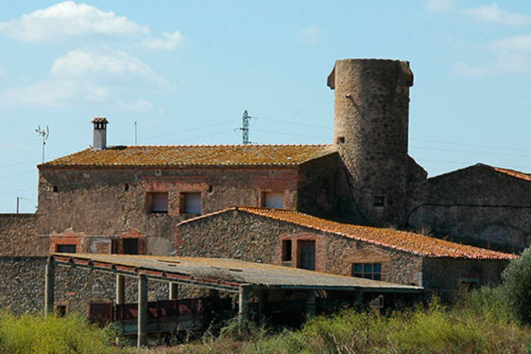

Visita · Montgrí
La Torre Quintaneta és un mas fortificat a la plana entre la vila de Torroella de Montgrí i l'Estartit (Baix Empordà). L'edifici és a uns 18 msnm. L'edifici té una torre de defensa cilíndrica,…